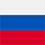
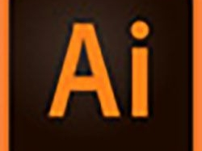
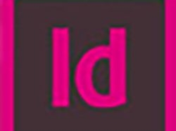

За мен
Привет, аз съм Катя.
Образование
Период:
от 1995г - до 2000г;
Тип на образованието:
Висше; Квалификационна степен:
завършено семестриално;Обучителна институция:
ВПУ "Паисий Хилендарски" Пловдив;Специалност:
Начална и предучилищна педагогика.Трудов стаж
Допълнителни квалификации
Период:
от 11.2022г - до 04.2025г;
Тип на квалификацията:
Частен професионален колеж; Обучителна институция:
Компютърна академия IT STEP;Специалност:
Компютърна графика и дизайн.Езикова и компютърна грамотност
 Руски език - базисно ниво
 Adobe Illustrator- много високо ниво
 Adobe Indesign - добро ниво
 Balsamiq - много високо ниво
Balsamiq - много високо ниво